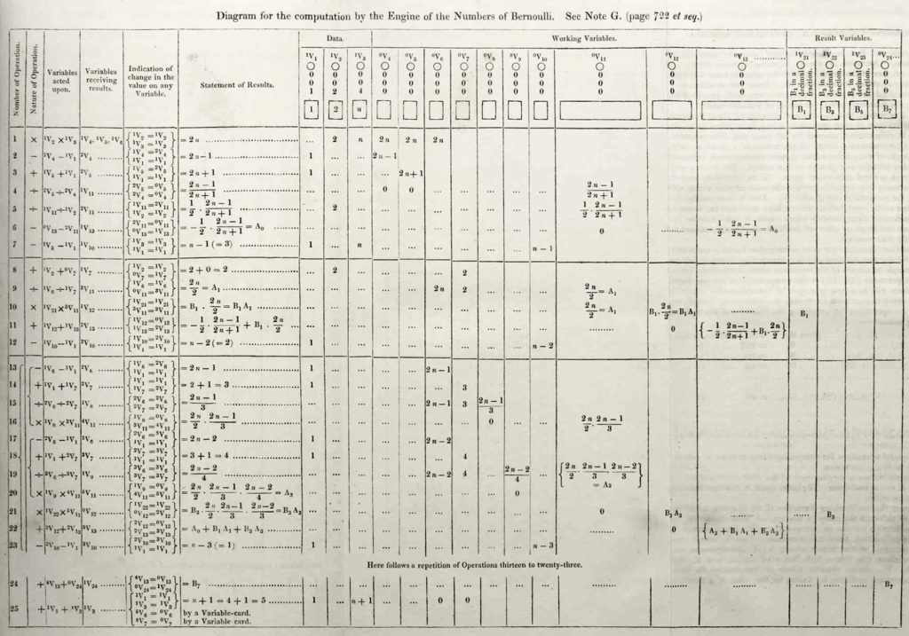

Curiosidades
Ada Lovelace nasceu no dia 10 de dezembro de 1815. Seu pai era o famoso Lord Byron, que, quando soube do seu nascimento, ficou extremamente desapontado por não ser um menino, comparando o nascimento de Ada com um instrumento de tortura em sua vida.
Com apenas semanas do nascimento da pequena Lovelace, Lord Byron escreveu um bilhete para a sua então esposa, Lady Anne Isabella Milbanke Byron, falando que ele iria continuar o seu affair com uma atriz de teatro e que ela deveria encontrar um dia conveniente para sair de casa. Ele acrescentou em seu recado, de forma enfática, que a criança deveria acompanhá-la, situação que fez com que o poeta nunca mais visse a sua filha.
Ada Lovelace nasceu de um casamento infeliz, porém, de uma relação entre duas pessoas muito talentosas. Sua mãe, Lady Anne Isabella Byron, era matemática, tendo sido tutorada, desde a infância, por um ex professor da Universidade de Cambridge, William Frend, que a ensinou literatura clássica, filosofia , ciências e matemática.
Lady Byron, temendo que sua filha herdasse a natureza poética de Lord Byron, na qual ela ligava a boemia, buscou colocá-la, aos quatro anos de idade, na mesma área de conhecimento que ela. Ada, então, foi instruída desde a primeira infância a estudar matemática e ciências.
Ada já demonstrava a sua natureza criativa desde pequena e, aos 12 anos de idade, ela confidenciou a mãe que queria construir uma máquina voadora. A sua ideia era desenvolver um mecanismo a vapor, em formato de cavalo, que carregasse um par de asas, possibilitando que humanos voassem em suas costas.
A jovem imaginou esse aparato após estudar a anatomia dos pássaros e a adequação de vários materiais, conhecimentos que a ajudou ilustrar todo o seu projeto.
Máquina
Aos 28 anos, Ada ainda era mentorada por Babbage e, em razão disto, ela fez a tradução de um artigo escrito por Luigi Menabrea, engenheiro militar e futuro primeiro ministro italiano, a respeito da máquina de calcular inventada por Babbage.
Porém, além da tradução, Ada acrescentou diversas das suas anotações sobre o mecanismo analítico, incluindo como a máquina poderia ser programada com um código capaz de calcular os números de Bernoulli.
O artigo se tornou três vezes mais longo do que o escrito por Luigi, e foi publicado no The Ladies’ Diary e no Memorial Científico de Taylor, assinado somente com as iniciais de Lovelace, AAL.

Contato
Email: mulheres.tecnologicas@gmail.com
Telefone: (82) 94004 - 8922
Instagram: @mulheres.tecnologicas